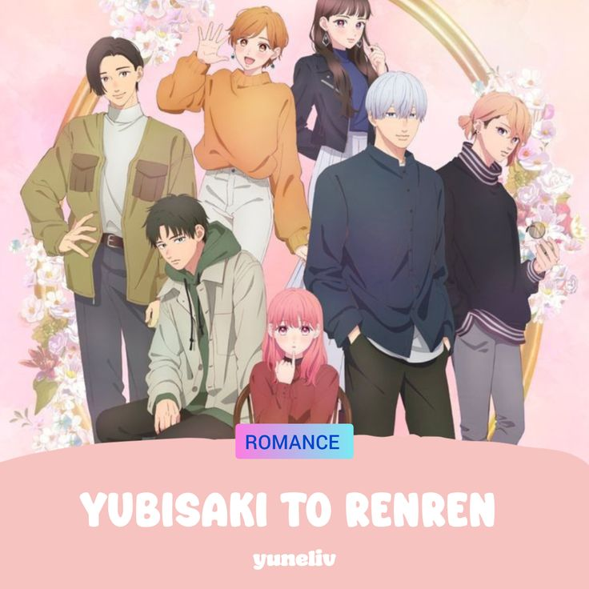
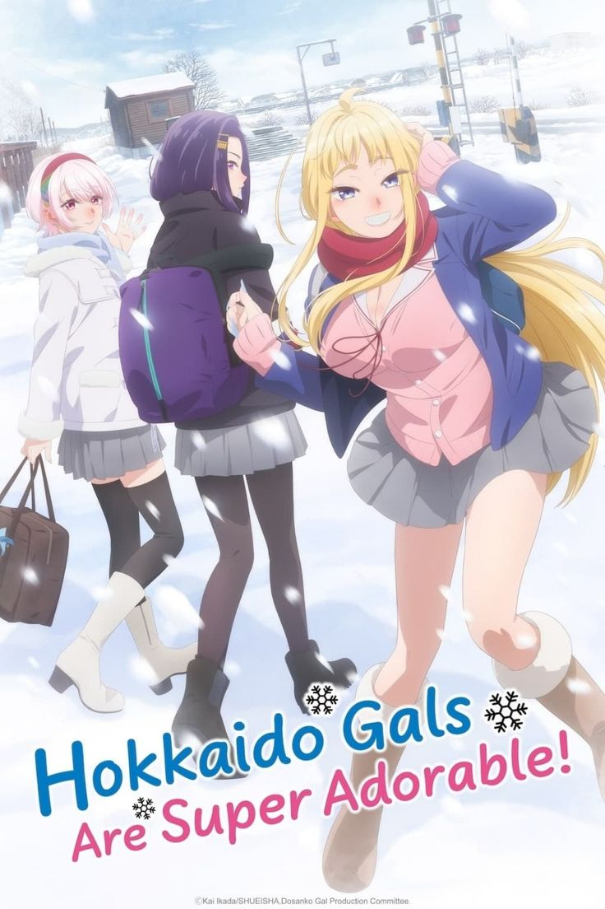
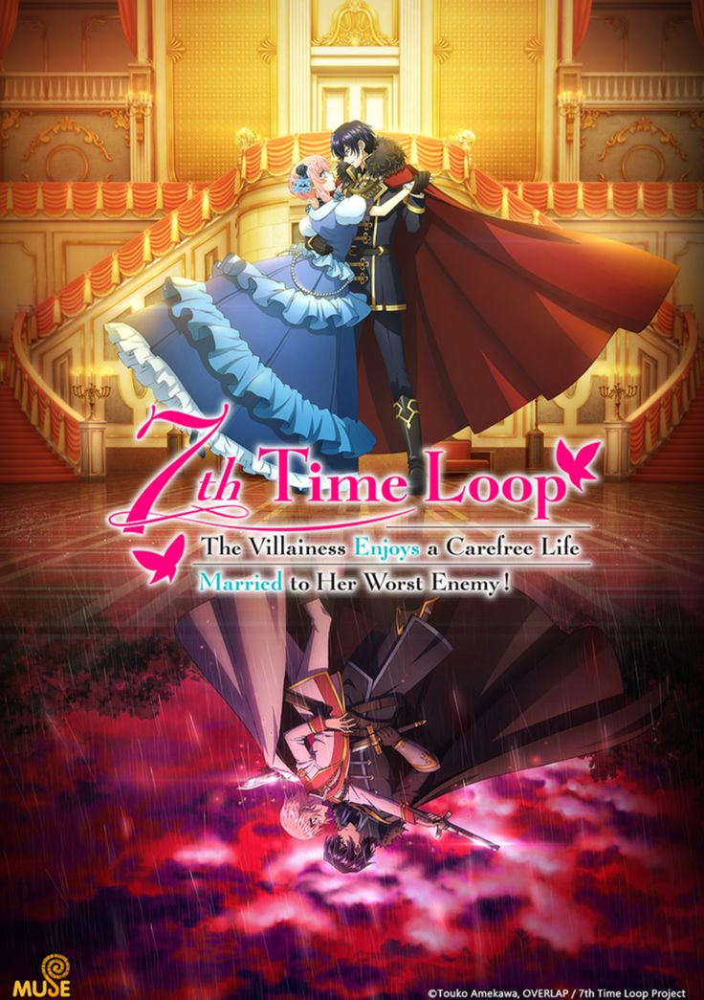
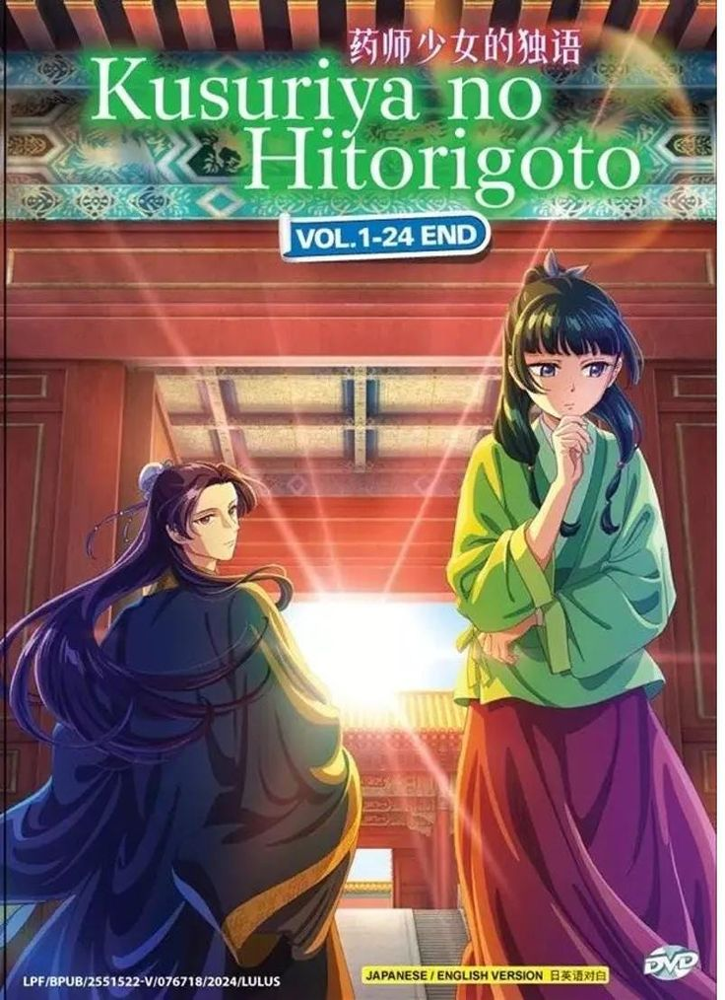
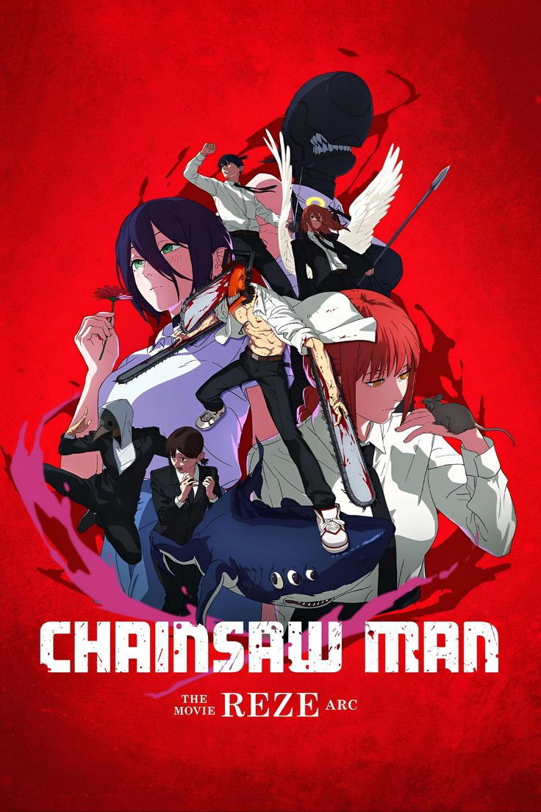

ANIMEREC

Solo Leveling
Anime action tentang hunter terlemah menjadi terkuat.

Yubisaki To RENREN
Anime ini menceritakan tentang Yuki Itose, seorang mahasiswi yang terlahir tuna rungu (tuli). Hidupnya berputar di lingkungan yang sunyi sampai suatu hari ia bertemu dengan Itsuomi Nagi, kakak kelas di kampusnya, dalam sebuah pertemuan yang tidak sengaja di kereta.

HOKKAIDO GALS ARE SUPER ADORABLE!
kita akan mengikuti kisah Tsubasa Shiki, seorang siswa SMA yang baru saja pindah ke Hokkaido. Awalnya, Tsubasa merasa kesulitan untuk menikmati keindahan musim dingin di daerah tersebut. Namun, segalanya berubah ketika ia bertemu dengan Minami Fuyuki, gadis lokal yang penuh semangat, yang membawanya merasakan pesona baru dari Hokkaido. Seiring berkembangnya hubungan mereka, Tsubasa mulai menemukan kebahagiaan dalam menjelajahi kehidupan barunya, ditemani oleh Fuyuki dan teman-temannya yang menawan.

7TH TIME LOOP: THE VILLAINESS ENJOYS A CAREFREE LIFE MARRIED TO HER WORST ENEMY!
Mengisahkan perjalanan Rishe yang terlahir kembali untuk yang ketujuh kalinya, anime ini mengikuti tekadnya untuk menjalani hidup dengan santai dan penuh kebebasan. Namun, untuk meraih kehidupan mewah yang diimpikannya, Rishe harus bersedia menikahi musuh terbesarnya, seorang pangeran. Dengan bekal pengalaman dari enam kehidupan sebelumnya, ia bertekad untuk mengubah takdir dan mewujudkan mimpinya yang luar biasa.

KUSURIYA NO HITORIGOTO 2ND SEASON
Di musim kedua yang penuh ketegangan ini, kecerdasan Maomao kembali bersinar saat ia berhadapan dengan misteri yang mengancam stabilitas istana. Tiba-tiba, karavan pedagang misterius muncul, membawa serta serangkaian kejanggalan yang mengguncang keseimbangan kekuasaan di antara para selir kaisar. Dengan keberanian dan kepiawaian, Maomao bertekad untuk mengungkap kebenaran yang tersembunyi di balik konspirasi gelap yang merongrong istana, menjadikannya petualangan yang tak boleh dilewatkan!

CHAINSAW MAN: REZE-HEN
Kisah kali ini menggugah hati saat mengungkap hubungan unik antara Denji dan Reze, seorang gadis kafe misterius yang mampu membalikkan pandangan Denji tentang cinta dan kepercayaan. Namun, di balik momen-momen manis yang mereka bagi, bayang-bayang ancaman baru dari dunia iblis mengintai, siap mengguncang kestabilan Division 4.